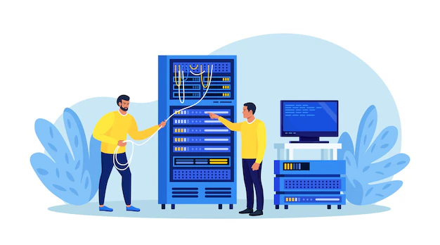

Serviços oferecidos por nós:
-
Manutenção
Oferecemos serviços abrangentes de manutenção para garantir o desempenho e a confiabilidade dos computadores. Isso inclui diagnóstico de hardware, limpeza de software, atualizações de sistema operacional e solução de problemas gerais para manter os dispositivos funcionando de maneira eficiente.

-
Anti-virus
Implementamos soluções robustas de antivírus para proteger seus sistemas contra ameaças online e malware. Isso envolve a instalação e configuração de softwares antivírus, além de monitoramento contínuo para detectar e neutralizar potenciais ameaças à segurança.
-
Sergurança da Informação
Fornecemos estratégias e implementações para garantir a segurança dos dados e informações da sua empresa. Isso inclui a configuração de firewalls, políticas de acesso, criptografia de dados e conscientização sobre segurança para proteger contra ameaças internas e externas.
-
Virtualização de servidores
Utilizamos tecnologias de virtualização para otimizar o uso de recursos de servidor, consolidando múltiplos servidores físicos em um ambiente virtual.Resultando em maior eficiência, escalabilidade e redução de custos operacionais.
-
Administração de servidores
Gerenciamos e administramos seus servidores para garantir operações contínuas e eficazes. Incluindo configuração, manutenção, monitoramento de desempenho, aplicação de atualizações e solução de problemas para garantir a estabilidade e a segurança dos seus servidores.
 -
Suporte remoto
Oferecemos suporte técnico instantâneo e remoto para resolver problemas e fornecer assistência aos usuários.Utilizando ferramentas de acesso remoto, nossa equipe pode diagnosticar e solucionar questões técnicas sem a necessidade de estar fisicamente presente, otimizando o tempo de resposta.